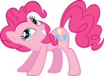
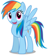
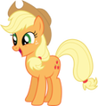
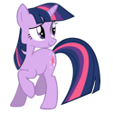

Найди свою пони!

PinkiePie Page
Пинки Пай (англ. Pinkie Pie) (полное имя — Пинкамина Диана Пай; англ. Pinkamena Diane Pie) — ярко-розовая земная пони с тёмно-розовой гривой. Её знак отличия — три воздушных шарика: один жёлтый и два голубых.

RainbowDash Page
Радуга Дэш (англ. Rainbow Dash) — небесно-голубая пони-пегас с радужной гривой и хвостом, являющаяся одним из главных персонажей в сериале. Она ответственна за поддержание погоды и расчистку неба от облаков в Понивилле.

AppleJack Page
Эпплджек (англ. Applejack) — земная пони, являющаяся одним из главных персонажей в сериале. Она живёт и работает на ферме «Яблочная Аллея» (Sweet Apple Acres), где выращивает различные овощи и фрукты, в основном – яблоки.

TwilightSparkle Page
Сумеречная Искорка (англ. Twilight Sparkle) — пони-единорог сиреневого цвета, с гривой тёмно-синего цвета и розово-фиолетовыми прядями. Её знак отличия — розовая шестиконечная звезда в окружении пяти маленьких белых звёзд. Является бывшей лучшей ученицей Принцессы Селестии и главной героиней сериала.